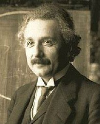

Albert Einstein (14 de marzo de 1879 - 18 de abril de 1955) fue un físico alemán de origen judío, nacionalizado después suizo y
estadounidense. Está considerado como el científico más importante del siglo XX.
En 1905, cuando era un joven físico desconocido, empleado en la Oficina de Patentes de Berna, publicó su teoría de la relatividad especial.
En ella incorporó, en un marco teórico simple fundamentado en postulados físicos sencillos, conceptos y fenómenos estudiados antes por
Henri Poincaré y por Hendrik Lorentz. Ese año publicó otros trabajos que sentarían bases para la física estadística y la mecánica cuántica.